library(sf)
library(tidyverse)
library(spatialreg)
library(spdep)Assignment 7 - Local autocorrelation
Global and local autocorrelation assesment
dataobserved <- st_read('Schweiz_precipitation_projected_ETRS89/dataobserved.shp')
chgrenzen <- st_read('Schweiz_precipitation_projected_ETRS89/ch_grenzen.shp')Precipitation data in Switzerland
For this assignment we are going to use precipitation data for Switzerland. We can see on the graphs below that the precipitation ranges from 0 to values above 400 mm, and by visual inspection the most precipitation is clustered in two locations, west and south east.
ggplot(dataobserved) + geom_sf(data = chgrenzen) +
geom_sf(aes(size = Z_1_10MM)) +
labs(size = 'Precipitation (mm)')+
theme_minimal()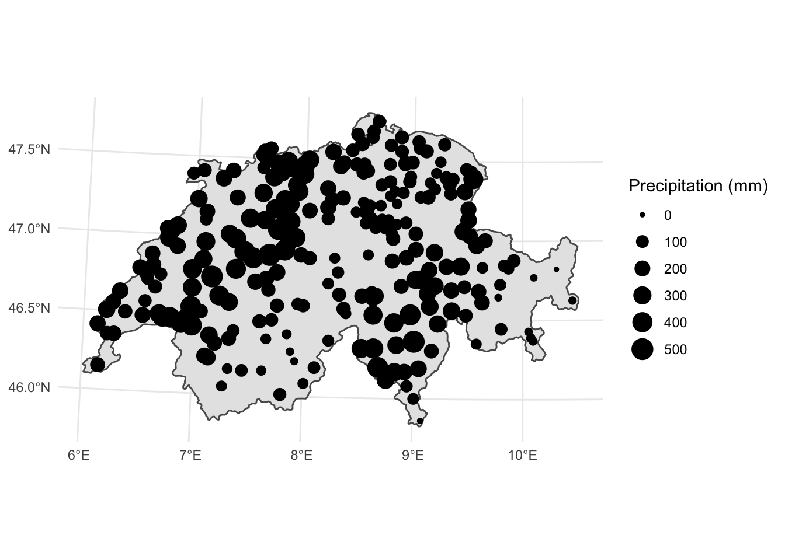
ggplot(dataobserved) + geom_histogram(aes(x = Z_1_10MM), binwidth = 50, fill = 'white', col = 'black') +
labs(x = 'Precipitation (mm)') +
theme_minimal()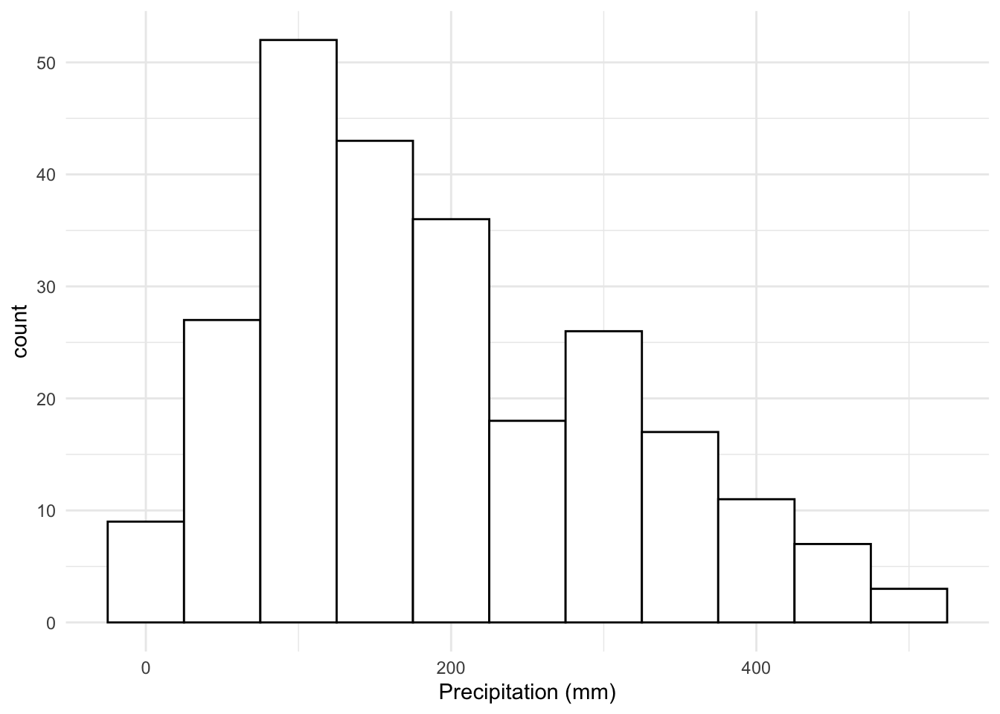
Global autocorrelation
We are going to compare Global autocorrelation calculating Moran’s I both in R and in ArcGIS Pro.
nb <- st_geometry(dataobserved) %>%
st_centroid() %>%
knearneigh(., k=4) %>%
knn2nb()
moran.test(dataobserved$Z_1_10MM, nb2listw(nb))
Moran I test under randomisation
data: dataobserved$Z_1_10MM
weights: nb2listw(nb)
Moran I statistic standard deviate = 17.408, p-value < 2.2e-16
alternative hypothesis: greater
sample estimates:
Moran I statistic Expectation Variance
0.727626889 -0.004032258 0.001766519 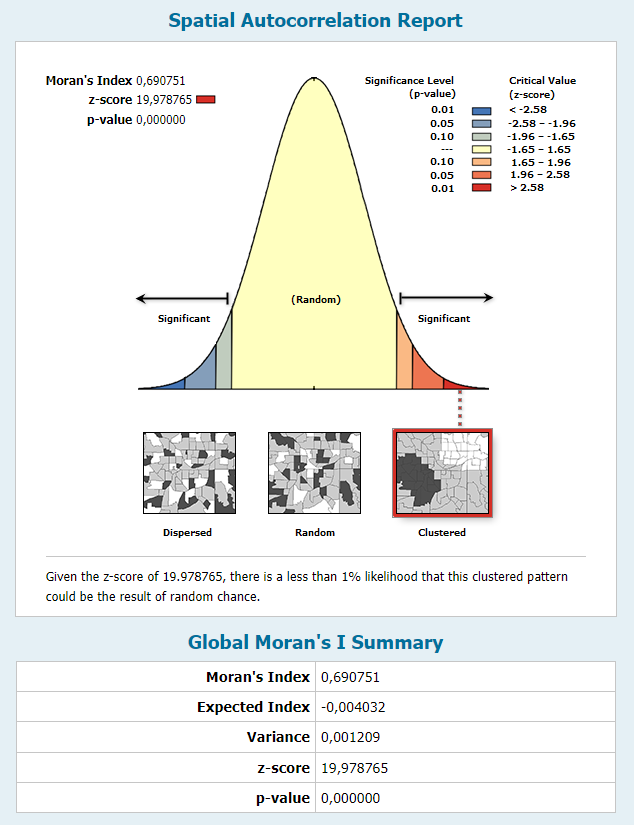
Global Moran’I are similar in both softwares, 0.73 and 0.69 in R and ArcGIS respectively. The differences might be due to the definition in neighbors, in R we defined the neighbors with knn = 4.
Local autocorrelation
Now we can calculate local Moran’s I. This will give us a better approximation of the local behavior of autocorrelation. In addition, we are including distance as weights, this is, inverse distance and inverse distance squared. Inverse distance squared gives more importance to closer neighbors.
oid <- order(dataobserved$ID)
nb_inv_dist <- nbdists(nb, st_geometry(dataobserved) |>
st_centroid()) |> lapply(function(x) 1/(x))
nb_inv_dist_sq <- nbdists(nb, st_geometry(dataobserved) |>
st_centroid()) |> lapply(function(x) (1/(x))^2)
resI_invDist <- localmoran(dataobserved$Z_1_10MM, nb2listw(nb, glist = nb_inv_dist))
resI_invDistSq <- localmoran(dataobserved$Z_1_10MM, nb2listw(nb, glist = nb_inv_dist_sq))hist(resI_invDist[,1])hist(resI_invDistSq[,1])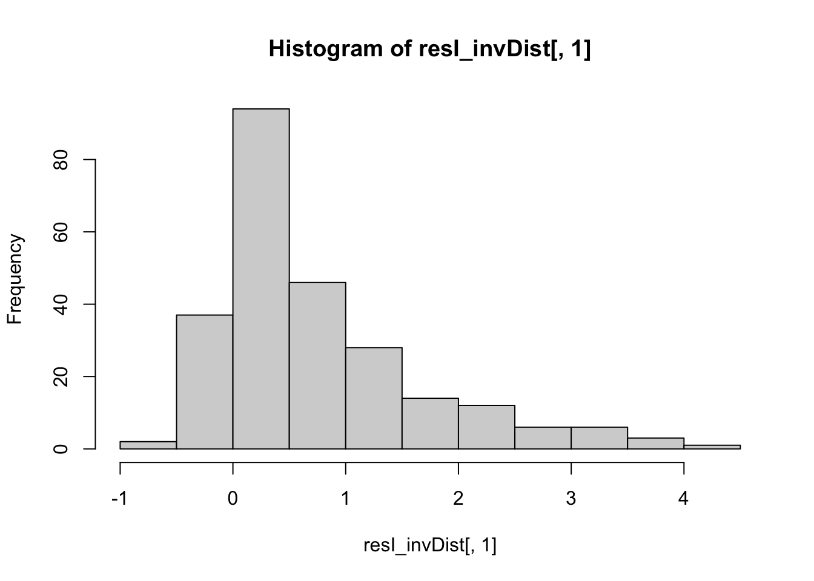
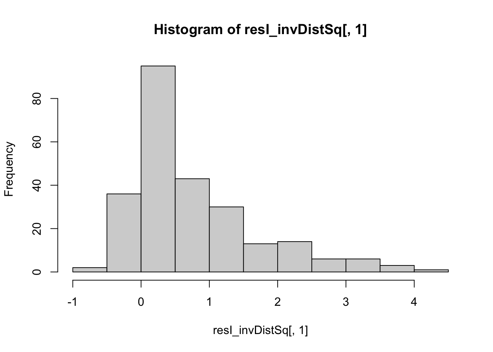
As expected the mean value for local Moran’s I is greater for the inverse distance squared weighting.
mean(resI_invDist[,1])[1] 0.7432932mean(resI_invDistSq[,1])[1] 0.7585284set.seed(1)
resI_p_invDist <- localmoran_perm(dataobserved$Z_1_10MM, nb2listw(nb, glist = nb_inv_dist))
resI_p_invDistSq <- localmoran_perm(dataobserved$Z_1_10MM, nb2listw(nb, glist = nb_inv_dist_sq))
prec_resI_invDist <- cbind(dataobserved[oid,], data.frame(resI_invDist[oid,]))
prec_resI_invDistSq <- cbind(dataobserved[oid,], data.frame(resI_invDistSq[oid,]))ggplot(prec_resI_invDist) + geom_sf(data = chgrenzen) +
geom_sf(aes(size = Z_1_10MM, col = Ii)) +
labs(col = "Moran's I", size = 'Precipitation (mm)') +
theme_minimal()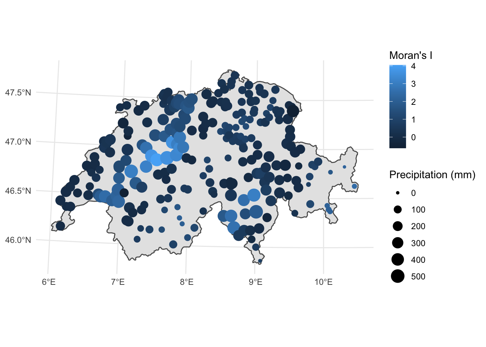
ggplot(prec_resI_invDistSq) + geom_sf(data = chgrenzen) +
geom_sf(aes(size = Z_1_10MM, col = Ii)) +
labs(col = "Moran's I", size = 'Precipitation (mm)') +
theme_minimal()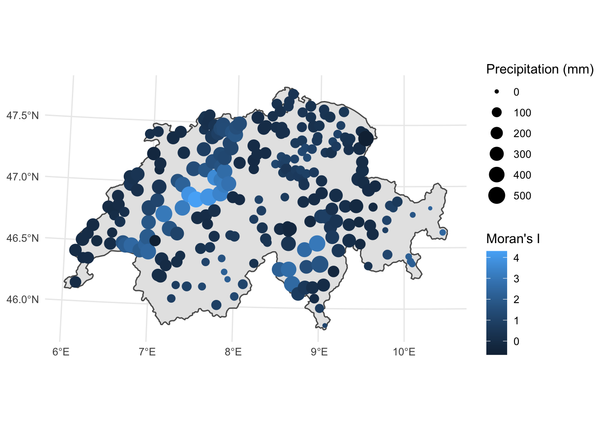
Local Moran’s I allows us to assess how autocorrelation varies spatially. Additionally, we can identify clusters of high autocorrelation values with high precipitation (HH) and low autocorrelation with low precipitation (LL). A simple example is shown below.
prec_resI_invDistSq |> mutate(
type = case_when(
Z_1_10MM >= 200 & Ii >= 2 ~ 'HH',
Z_1_10MM < 200 & Ii < 2 ~ 'LL',
TRUE ~ 'other'
)
) |>
filter(type != 'other') |>
ggplot() +
geom_sf(data = chgrenzen) +
geom_sf(aes(col = type)) +
labs(col = "Type") +
theme_minimal()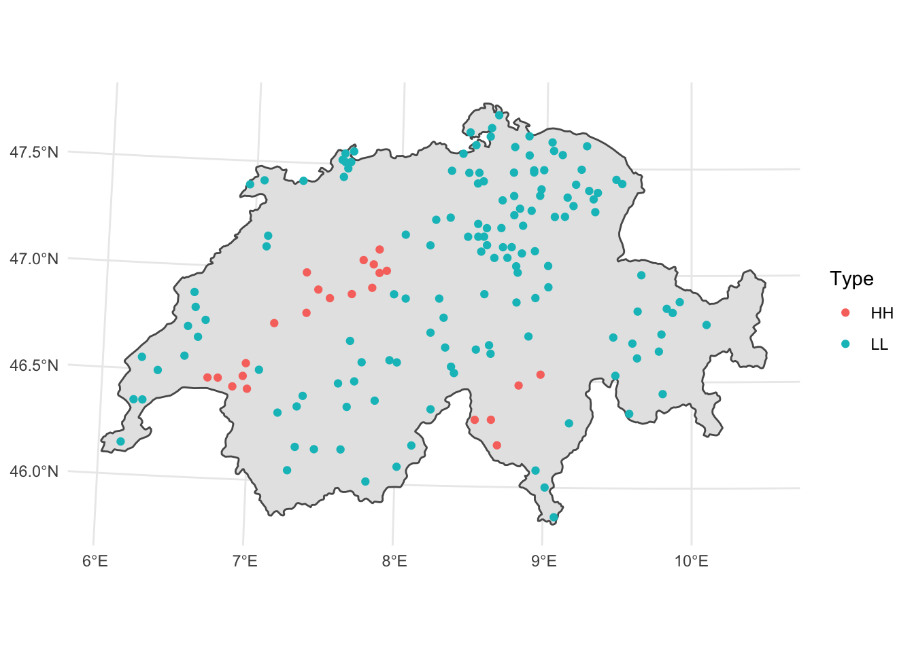
ArcGIS expands on this capability with the tool ‘Cluster and Outlier analysis’, where HH, LL, HL, and LH clusters are identified. Below are examples of this clusters with different settings.
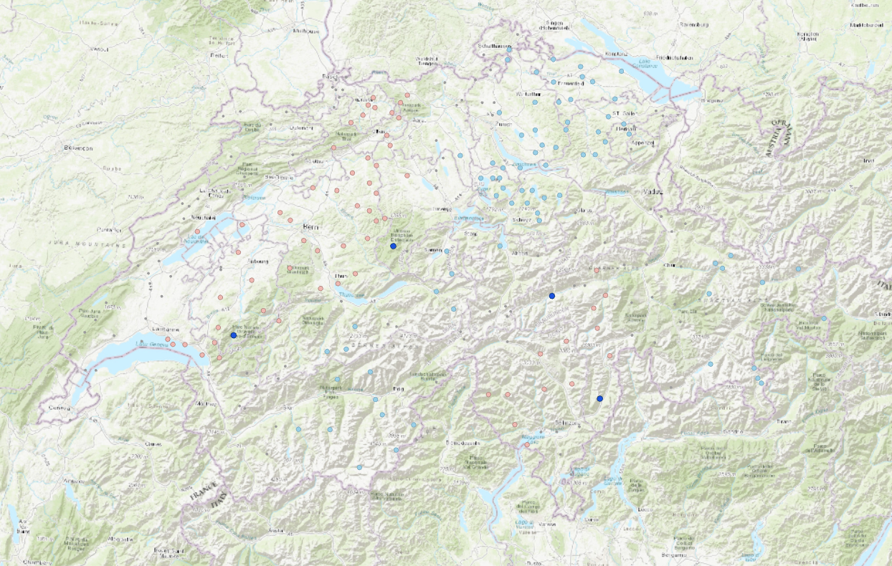
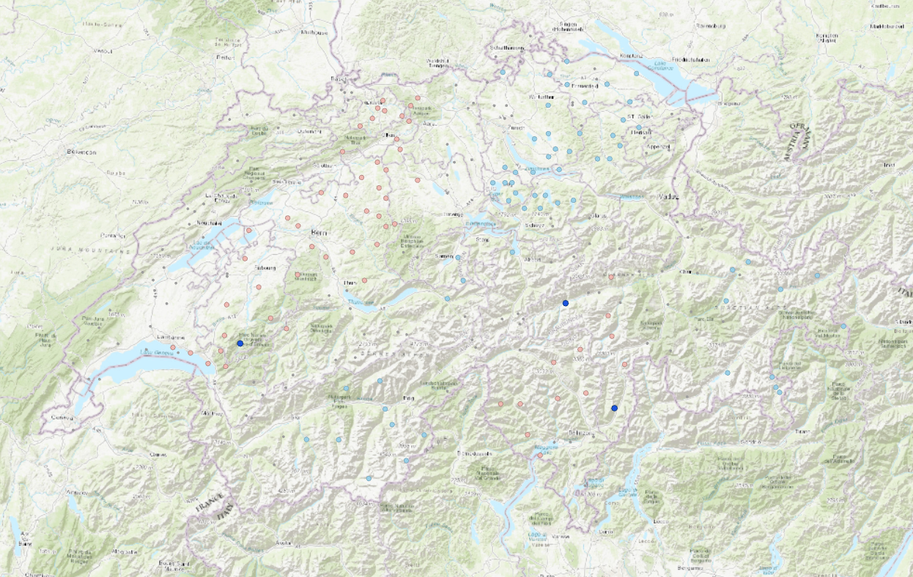
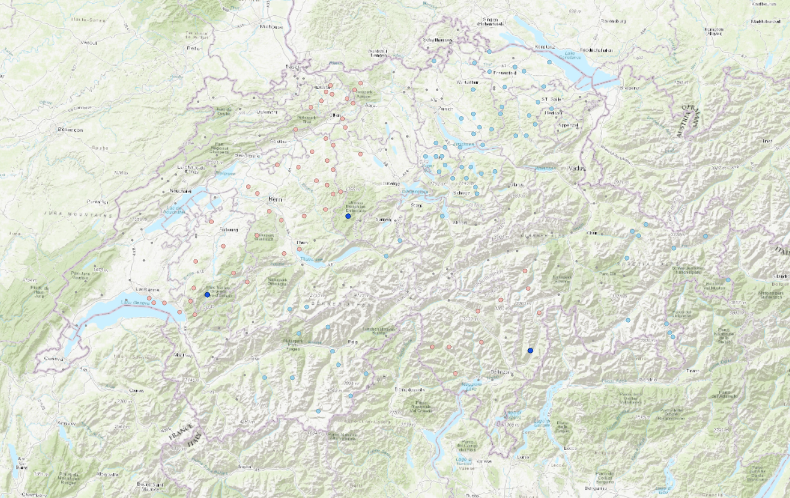
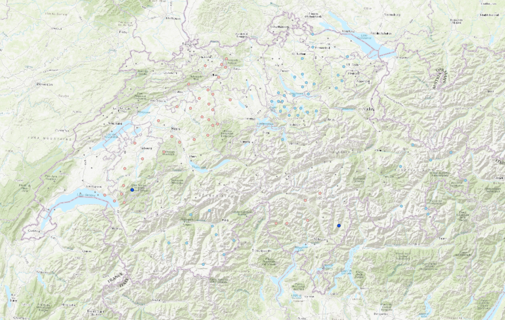
The clusters are identified by putting thresholds at z-transformed precipitation values against a spatial lag.